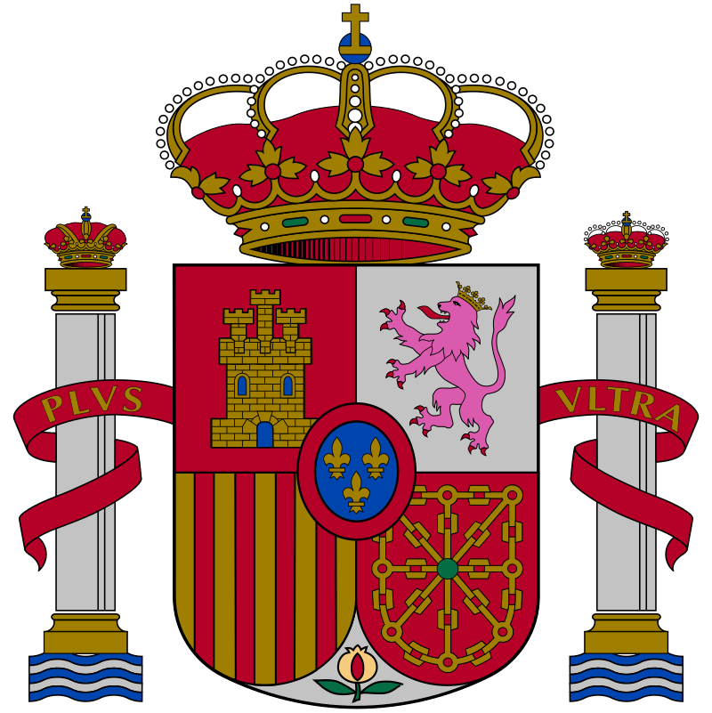

Spain
Spain, or the Kingdom of Spain (Reino de España), is a country primarily located in southwestern Europe with parts of territory in the Atlantic Ocean and across the Mediterranean Sea.
The largest part of Spain is situated on the Iberian Peninsula; its territory also includes the Canary Islands in the Atlantic Ocean,
the Balearic Islands in the Mediterranean Sea, and the autonomous cities of Ceuta and Melilla in Africa. The country's mainland is bordered to the south by Gibraltar;
to the south and east by the Mediterranean Sea; to the north by France, Andorra and the Bay of Biscay;
and to the west by Portugal and the Atlantic Ocean. With an area of 505,990 km2 (195,360 sq mi),
Spain is the second-largest country in the European Union (EU) and, with a population exceeding 47.4 million, the fourth-most populous EU member state.
Spain's capital and largest city is Madrid; other major urban areas include Barcelona, Valencia, Seville, Zaragoza, Málaga, Murcia, Palma de Mallorca,
Las Palmas de Gran Canaria and Bilbao.
Madrid
Madrid is the capital and most populous city of Spain. The city has almost 3.4 million inhabitants and a metropolitan area population of approximately 6.7 million.
It is the second-largest city in the European Union (EU), and its monocentric metropolitan area is the third-largest in the EU.
The municipality covers 604.3 km2 (233.3 sq mi) geographical area.
Madrid lies on the River Manzanares in the central part of the Iberian Peninsula.
Capital city of both Spain (almost without interruption since 1561) and the surrounding autonomous community of Madrid (since 1983), it is also the political,
economic and cultural centre of the country.The city is situated on an elevated plain about 300 km (190 mi) from the closest seaside location.
The climate of Madrid features hot summers and cool winters.
Popular cities
- Barcelona
- Madrid
- Valencia
- Seville
- Zaragoza
Marked list
- Barcelona
- Madrid
- Valencia
- Seville
- Zaragoza
Numeric list
- Barcelona
- Madrid
- Valencia
- Seville
- Zaragoza
Table of cities
| City | Population |
|---|
| Barcelona | 6,155,116 |
| Madrid | 5,179,243 |
| Valencia | 1,645,342 |
| Seville | 1,305,342 |
| Zaragoza | 987,000 |
| Málaga | 944,000 |
| Palma de Mallorca | 844,000 |
| Bilbao | 793,000 |
| Granada | 640,000 |
| Vigo | 639,000 |

Archaeological research at Atapuerca indicates the Iberian Peninsula was populated by hominids 1.2 million years ago.
In Atapuerca fossils have been found of the earliest known hominins in Europe, Homo antecessor. Modern humans first arrived in Iberia, from the north on foot,
about 35,000 years ago. The best known artefacts of these prehistoric human settlements are the famous paintings in the Altamira cave of Cantabria in northern Iberia,
which were created from 35,600 to 13,500 BCE by Cro-Magnon. Archaeological and genetic evidence suggests that the Iberian Peninsula acted as one of several major refugia
from which northern Europe was repopulated following the end of the last ice age. The largest groups inhabiting the Iberian Peninsula before the Roman conquest were
the Iberians and the Celts. The Iberians inhabited the Mediterranean side of the peninsula, from the northeast to the southeast.
The Celts inhabited much of the interior and Atlantic side of the peninsula, from the northwest to the southwest.
Basques occupied the western area of the Pyrenees mountain range and adjacent areas, the Phoenician-influenced Tartessians culture flourished in the southwest and the
Lusitanians and Vettones occupied areas in the central west. Several cities were founded along the coast by Phoenicians, and trading outposts and colonies were established
by Greeks in the East. Eventually, Phoenician-Carthaginians expanded inland towards the meseta; however, due to the bellicose inland tribes, the Carthaginians got settled
in the coasts of the Iberian Peninsula.